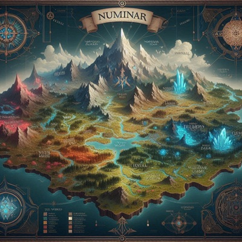

Bienvenidos a Numinar
Un vasto mundo suspendido en el cielo donde la magia ancestral se fusiona con la tecnología avanzada.
Hace mil años, La Ruptura fragmentó el cosmos, aislando a Numinar en un mar de nubes.
Ahora, sus habitantes se aventuran entre islas flotantes, conectadas por rutas aéreas y portales mágicos.
Misiones y aventuras
- Explora las fortalezas de Thalmar y descubre sus secretos tecnológicos.
- Atraviesa el oscuro Bosque de Sombras Eternas y enfréntate a su magia ancestral.
- Sobrevive en el ardiente archipiélago de Las Llamas del Norte y domestica a los dragones dormidos.
- Busca la verdad en la Ciudadela de Cristal y ayuda a los Sabios del Cosmos a restaurar el equilibrio.
¡Prepara tu equipo, afila tu espada y embárcate en la aventura de tu vida en Numinar. El destino del cosmos está en tus manos!
Selecciona una región para comenzar con la aventura
